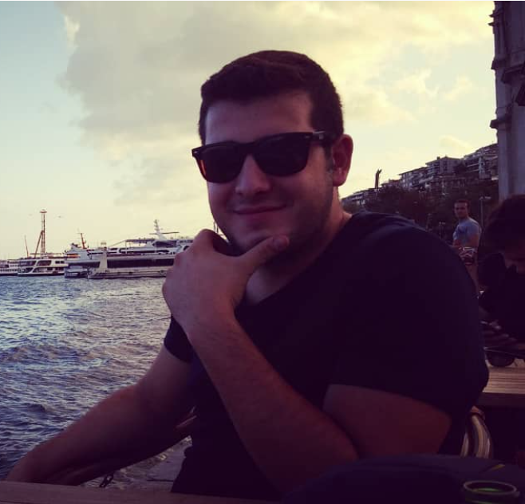

İstanbul,Turkiye
+90 539 393 0307
berksekli@gmail.com
LinkedIn Profili
2014 yılında Doğa Koleji Eğitim Kurumunda bölge planlama sorumluluğu işi ile operasyon süreçlerini deneyimleme fırsatı buldum. Ardından 2015 yılında Üsküdar Üniversitesi’nin araç operasyonlarıyla ilgili görev aldım. 2019 yılının sonundan itibaren ise E-Ticaret Operasyonları bölümünde kariyerime devam ediyorum ve E-Ticaret süreçleriyle ilgili genel bilgilere hakimim.